| Seniors | |
| KathyKennedy aka Wedge:Ourtrue veteran, oh captain my captain, never afraid to send up that huck. Being our team perma-perv, she's always there to send any comment straightto the gutter. 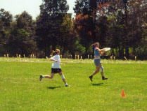 |  |
| KellyReiners aka Rev:Hermad handling skills make her a definite force for the frogs, and her onehanded snag is something to be jealous of!! Her high tolerance makesher a blast at parties!!! 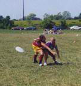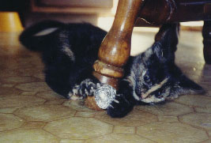 | 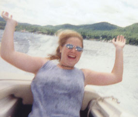 |
| KateMcDevitt aka AOTFK:Not many can match her ability to cut while holding her hands ready topancake that disc. She's got the most graceful layouts on the team(hehe). And she never denies us an awesome home cooked dinner!! | |
| Laura Dunn: | |
| Juniors | |
| KatyCagle aka K-Rock: She'sour long, and the massive apex for the Tough Nut Cup. Our team stud,although she's quite "shy" and "fragile" and the Queen of awkward moments. Taking care of our sunscreen needs. 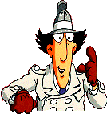 | 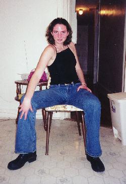 |
| BetsyAnderson aka Spurt:Thishard core player is never afraid to lay out for the disc and our ToughNut Cup would be nothing without her. If there's dancing Spurt willbe there! | 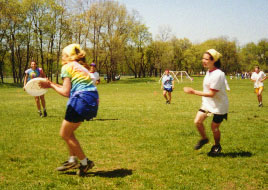 |
| Becky Chanoux aka Grams:She'san awesome middle with some amazing grabs. We all love her and she nevershows up without a smile and a great laugh. | 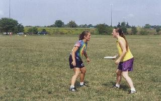 |
| DebraLowry aka Mamma T:Youmay never see her lay out but you also won't see her missing any discs;she comes up with the craziest catches. She's our organizationalforce off the field and always in charge of putting the triple (Katy, Saraand Deb) to bed!! | 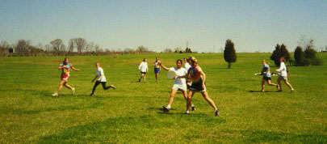 |
| SaraGifford aka Numbnuts: This little lady reallypacks a punch. Her wicked throws and mighty ups make her key in therealm of froggie action. Her lead foot always makes sure we're ontime, and her massive confrontational skills (not so much) make her a realasset in decision making! |  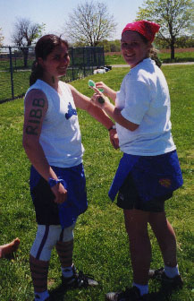 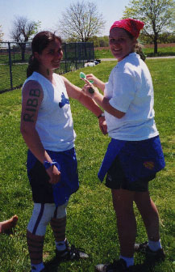 |
| Whitney Williams: You know you'vefound a good one when she suffers through her first tourney (having neverthrown a disc) savage and still manages to make some awesome D. Defenseis just an instinct for her, a few more practices and she will be a team'sworst nightmare. | |
| Becka Hutchinson: We love havingher around because she's always GREAT!! In the true spirit of Frogginess- she nabbed herself a shark. Her high release forehand is a threatto every opponent. | |
| Lisa Ievers: | |
| Sophomores | |
| Melanie Novak: As the team's motivatorshe is always inspiring the Frogs with her spirited cheering. Theshark (Jared) brought the Froggie out in Melanie. | |
| Kimberly Phillips: | |
| Freshman | |
| Julie Gabrielli aka PEV:PureEntertainment Value - that's all we have to say about this new Frog. This born athlete proved to be a natural and has quickly become our starlong. She's fast and once she learns to read... | |
| Rachel Lockwood: This new freshmanis an enthusiastic addition to our ranks. She never forgets a birthdayand never misses a party. | |
| Lindsey Warfel: You always knowwhen Lindsey in on the mark, because you can hear her a mile away, andyou know where Lindsey is going as her outstretched arm leads the way. As a charter member of the UFIOs she's always good for a laugh. | |
| Lauren Bogle: This girl has Ultimatein her blood. She's a force on the field and her mad cup skills candestroy any handler's confidence. | |
| Alex Bothwell: Not only does shehave fun on the field but this Dirty Girl Scout knows how to do some damageon the dance floor. As another charter member of the UFIOs she alwaysknows how to make an..."interesting" cheer. |
Alumni!!!
| Hellen Phan '00 akaColt 45: SuperSenior who just played one year, already kicking some booty on the field. She's got mad Ultimate skills as well as the ability to take down those40s. | |
| Michelle Lesh '00 akaLushy Lesh: Twothings you must know about Michelle is she's got mad ups and is our hoqueen. She almost knew everyone's name, seeing as she was at practiceevery day. (wink, wink) 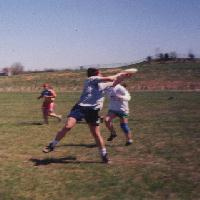 | 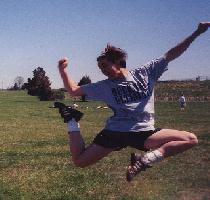 |
| Julie Manweiler '00: Anotherqueen of the snazzy catches, this senior taught us what it meant to bean awesome middle!! She's always on top of the school work but whenultimate calls - she comes. We really miss her. | 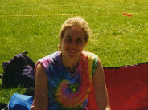 |